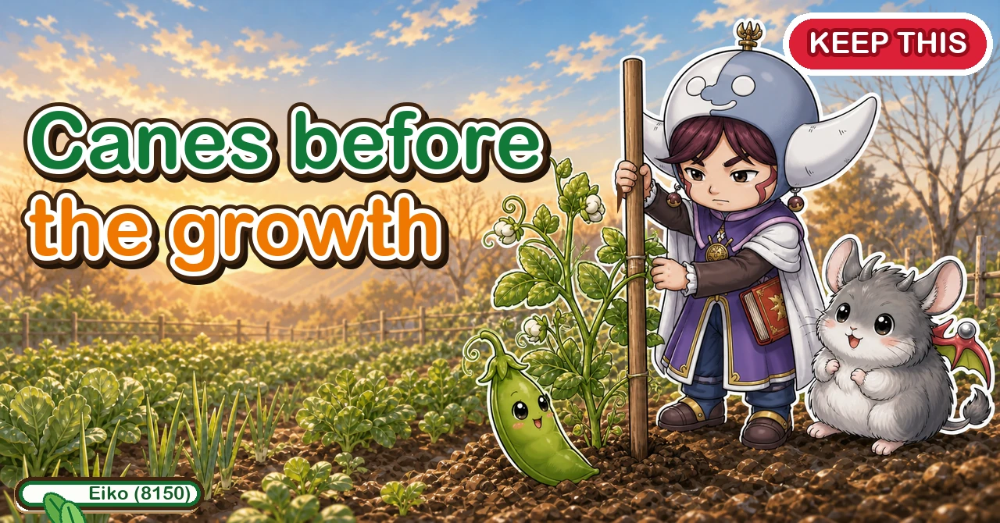
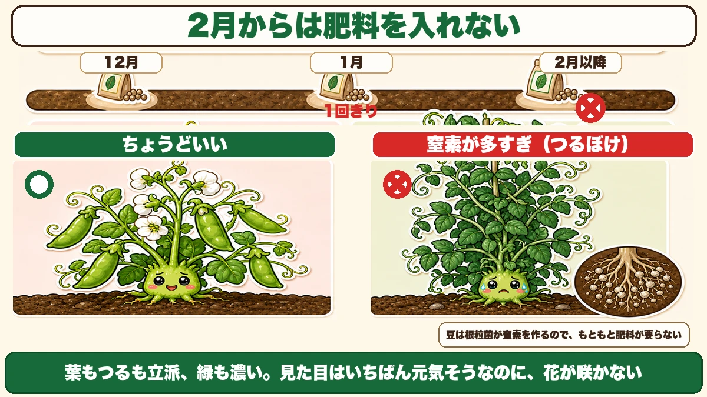
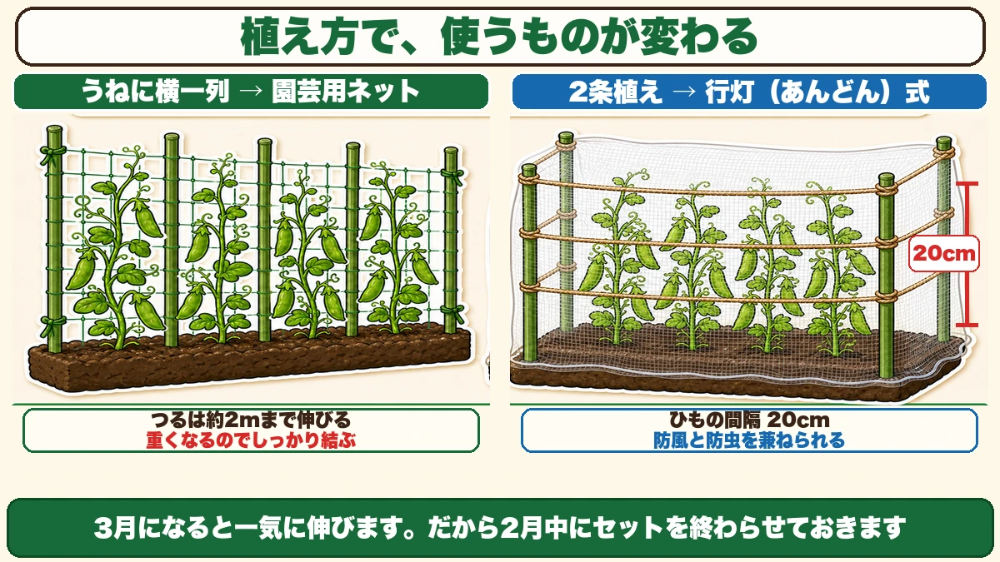
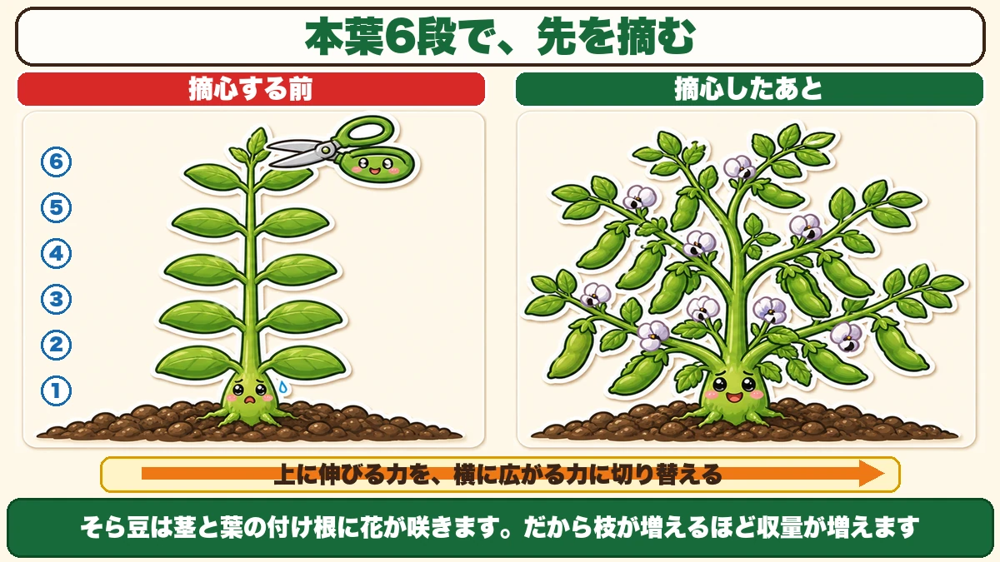
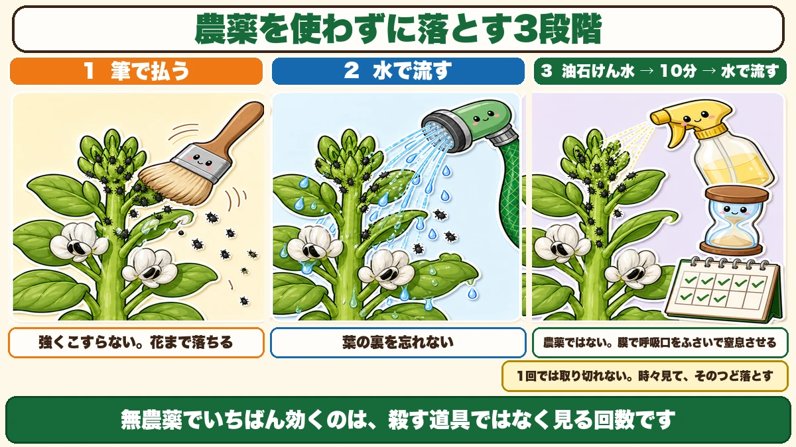

No more feed from late winter And supports put up in spring are already too late

🗨️ "Masses of vine and no pods."
🗨️ "They blew over before I got the supports in."
🗨️ "My broad beans were covered in black things."
Hello, I'm Eiko. Eight years of growing vegetables organically and without pesticides, and a teaching licence in science.
In the second half of winter, the legumes wake up.
All through the cold they do essentially nothing — 10 cm tall, sitting it out. Then, quite suddenly, they start growing. A long dormancy has ended.
From here they need regular attention. And the first job is a surprising one.
The point, up front:
From now on, no more fertiliser.
And get the supports up before the growth starts. Once it has, you're too late ☺️
① Stop feeding

What this diagram says （図解の文字）
- From late winter, no fertiliser
- Early winter ／ midwinter — once only ／ after that ×
- ○ about right ／ × too much nitrogen (all vine)
- Legumes make their own nitrogen through root-nodule bacteria, so they need little feeding to begin with
- Fine leaves, fine vines, deep green — the healthiest-looking plant in the garden, and no flowers
The all-vine failure
Looking at an overwintered plant, you think "smaller than I expected" and reach for the feed.
Don't.
Nitrogen gives you vine and no pods.
Leaves and vines magnificent, colour deep green — the healthiest-looking plant in the garden, and no flowers. Or flowers that set nothing. It's the most disappointing sight there is.
The whole feeding schedule
- Early winter — the feed that carries it through the cold
- Midwinter — a little between the plants, once only
- After that — nothing
That's it. Legumes can make their own nitrogen, so they don't need much to start with: root-nodule bacteria living in the roots capture nitrogen from the air and hand it to the plant.
Add nitrogen yourself and that relationship becomes surplus to requirements.
② Supports go up before the growth

What this diagram says （図解の文字）
- What you use depends on how you planted
- A single row along the bed → garden netting — the vines reach about 2 m ／ it gets heavy, so tie it well
- A double row → the "lantern" frame — strings at 20 cm spacing ／ it serves as both windbreak and insect netting
- Growth is sudden once it warms. So finish the setup beforehand
Why "later" doesn't work
Pea vines reach about 2 m (6½ ft). Much taller than people expect — a 60 cm cane is left behind almost immediately.
And the issue is the speed. Once it warms, they grow all at once.
Try to put supports in after the vines have extended and you're untangling as you go — and vines are brittle; pull and they snap.
So finish the setup before that happens. You're preparing the space before the growth arrives.
A single row — netting
Canes at even spacing with garden netting strung between. The vines find it themselves.
One caution: once the vines are on it and the foliage fills out, the netting gets very heavy. On a windy day the weight and the wind load together can bring the whole thing down — I've done it. Tie the netting to the canes properly, and err on the side of too many ties.
A double row — the lantern frame
Named after the old square paper lanterns, because that's the shape:
- Four canes, one at each corner around the plants
- Garden twine wound round in four levels, 20 cm apart
- Insect netting, folded, wrapped round the outside
The four levels of twine give the tendrils something to hold; the netting is the windbreak.
Why the windbreak matters
Late winter and early spring are still windy. New vines are thin and soft, and constant buffeting damages them at the base. A lifted crown lets the cold in.
Folded netting wrapped round takes the edge off the wind. The mesh is open, so it doesn't stop it completely — and that's correct. Enclose them entirely and you get stagnant, humid air instead.
Open up the base
One more job for this point in the season: remove the weak side shoots and the dying leaves.
As side shoots multiply towards spring, the base of the plant crowds up and the air stops moving — and poor air movement is, directly, pest and disease.
Thin, feeble side shoots and yellowing lower leaves. Pinching off those two opens the base up.
And weed while they're small. Tall weeds cast shade, and shade is where insects live.
③ Pinch broad beans and get more pods

What this diagram says （図解の文字）
- Pinch the tip at six leaf pairs
- Before pinching — 6 / 5 / 4 / 3 / 2 / 1 ／ after pinching
- You switch the force that goes upward into force that spreads sideways
- Broad beans flower where leaf meets stem. So more branches means more pods
Broad beans need a job peas don't: pinching out the tip.
You take the growing point at the top of the main stem between your fingers and remove it.
"It's finally growing and I'm cutting it off?" — I resisted it at first too. It increases the yield.
Why it increases it
Broad beans flower where a leaf joins the stem, and the pods form there.
Which means more branches = more flowering positions.
The tip's growing point is issuing the instruction to grow upward. Remove it and that instruction stops, and side shoots come instead — one stem becomes five or six.
You're converting upward force into sideways force.
The timing: six pairs of true leaves
Once growth has restarted and the plant has about six pairs of true leaves.
A "pair" is one set of leaves coming out either side. Count six sets from the bottom and pinch out the tip above them.
Too early weakens the plant; too late and the side shoots don't have time. This timing is worth remembering.
Clear the dead leaves
Overwintered broad beans often have dead lower leaves. A little dieback doesn't affect later growth — leave it.
But remove leaves that have died completely. Left at the base, they're where disease starts.
④ Aphids come off without sprays

What this diagram says （図解の文字）
- Three stages to get them off without pesticides
- 1 brush them off — don't rub hard, you'll take the flowers too
- 2 wash them off — don't forget the undersides
- 3 soap-and-oil spray → 10 minutes → rinse with water — not a pesticide; the film blocks their breathing holes and suffocates them
- One pass won't clear them. Look now and then, and take them off each time
- Without sprays, the thing that works best isn't a killing tool — it's how often you look
They will arrive
Grow broad beans and you will meet them: black aphids packed solid around the growing point.
The first time is genuinely unpleasant. There's no avoiding it — broad beans grow fast in spring, and that soft new tip is exactly what an aphid wants.
In quantity they reduce the number of pods, so when you see them, take them off.
Three stages
1. Brush them off. A soft brush, lightly. Don't scrub — take the flowers off and you've defeated the point. Most of them come away. Not all.
2. Wash them off. The ones you dislodged are sitting on the leaves below. Hose the whole plant. Don't forget the undersides, which is where most of them are.
3. Soap-and-oil spray, ten minutes, then rinse. The growing point is too congested for a brush, so spray it there, leave it ten minutes, and wash it off.
This isn't a pesticide. The soap film blocks their breathing holes and suffocates them — which is why it's usable in a no-spray garden.
Don't treat it as a one-off
The most important part: you cannot clear them all in one go. Some always remain, and they rebuild from there.
So it's look occasionally, remove each time.
I've made a habit of glancing at the growing point while I water. It takes ten seconds — and those ten seconds change the harvest.
Better: keep them off
The least effort of all is having netting on from the start.
And the windbreak netting on the lantern frame is that netting — one piece of kit doing both jobs. It won't exclude them completely, but the difference in numbers is large.
To sum up
- ✅ In late winter the legumes wake and grow fast
- ✅ No more feed from here. Nitrogen gives all vine and no pods
- ✅ Legumes make their own nitrogen via root-nodule bacteria
- ✅ Lost them over winter? Buy plants in spring — lower yield, still worth it
- ✅ Pea vines reach about 2 m
- ✅ Supports before the growth. Afterwards you're untangling
- ✅ Single row → netting, tied well because it gets heavy
- ✅ Double row → lantern frame: four canes, twine at 20 cm in four levels, netting as windbreak
- ✅ Remove weak side shoots and dead leaves to open the base
- ✅ Pinch broad beans at six leaf pairs
- ✅ They flower at leaf joints, so more branches means more pods
- ✅ Aphids: brush → wash → soap-and-oil for ten minutes
- ✅ Soap isn't a pesticide; it suffocates them with a film
- ✅ One pass is never enough. Look often
You don't have to do all of it. Just put the supports up this weekend. That alone halves how hectic spring is
Thank you for reading!